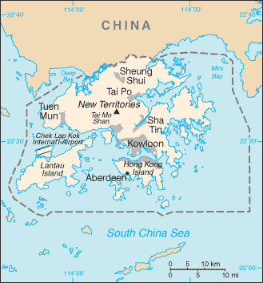
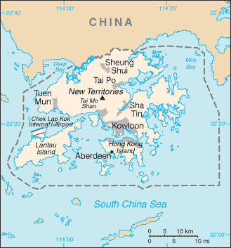

East & Southeast Asia :: HONG KONG
Introduction :: HONG KONG
-
Occupied by the UK in 1841, Hong Kong was formally ceded by China the following year; various adjacent lands were added later in the 19th century. Pursuant to an agreement signed by China and the UK on 19 December 1984, Hong Kong became the Hong Kong Special Administrative Region of the People's Republic of China on 1 July 1997. In this agreement, China promised that, under its "one country, two systems" formula, China's socialist economic system would not be imposed on Hong Kong and that Hong Kong would enjoy a "high degree of autonomy" in all matters except foreign and defense affairs for the subsequent 50 years.
Geography :: HONG KONG
-
Eastern Asia, bordering the South China Sea and China22 15 N, 114 10 ESoutheast Asiatotal: 1,108 sq kmland: 1,073 sq kmwater: 35 sq kmcountry comparison to the world: 184six times the size of Washington, DCtotal: 33 kmregional border(s) (1): China 33 km733 kmterritorial sea: 12 nmsubtropical monsoon; cool and humid in winter, hot and rainy from spring through summer, warm and sunny in fallhilly to mountainous with steep slopes; lowlands in northmean elevation: NAelevation extremes: lowest point: South China Sea 0 mhighest point: Tai Mo Shan 958 moutstanding deepwater harbor, feldsparagricultural land: 5%arable land 3.2%; permanent crops 0.9%; permanent pasture 0.9%forest: 0%other: 95% (2011 est.)10 sq km (2012)population fairly evenly distributedoccasional typhoonsair and water pollution from rapid urbanizationparty to: Marine Dumping (associate member), Ship Pollution (associate member)consists of a mainland area (the New Territories) and more than 200 islands
People and Society :: HONG KONG
-
7,191,503 (July 2017 est.)country comparison to the world: 100noun: Chinese/Hong Kongeradjective: Chinese/Hong KongChinese 93.1%, Indonesian 1.9%, Filipino 1.9%, other 3% (2011 est.)Cantonese (official) 89.5%, English (official) 3.5%, Mandarin (official) 1.4%, other Chinese dialects 4%, other 1.6% (2011 est.)eclectic mixture of local religions 90%, Christian 10%0-14 years: 12.19% (male 462,748/female 414,023)15-24 years: 10.43% (male 392,167/female 357,821)25-54 years: 44.68% (male 1,370,206/female 1,842,825)55-64 years: 16.17% (male 559,421/female 603,771)65 years and over: 16.53% (male 559,512/female 629,009) (2017 est.)total dependency ratio: 35.9youth dependency ratio: 15.2elderly dependency ratio: 20.7potential support ratio: 4.8 (2015 est.)total: 44.4 yearsmale: 43.5 yearsfemale: 45 years (2017 est.)country comparison to the world: 100.32% (2017 est.)country comparison to the world: 1738.9 births/1,000 population (2017 est.)country comparison to the world: 2087.4 deaths/1,000 population (2017 est.)country comparison to the world: 1171.7 migrant(s)/1,000 population (2017 est.)country comparison to the world: 53population fairly evenly distributedurban population: 100% of total population (2017)rate of urbanization: 0.64% annual rate of change (2015-20 est.)Hong Kong 7.26 million (2014)at birth: 1.12 male(s)/female0-14 years: 1.12 male(s)/female15-24 years: 1.08 male(s)/female25-54 years: 0.74 male(s)/female55-64 years: 0.94 male(s)/female65 years and over: 0.89 male(s)/femaletotal population: 0.87 male(s)/female (2016 est.)29.8 years (2008 est.)total: 2.7 deaths/1,000 live birthsmale: 3 deaths/1,000 live birthsfemale: 2.5 deaths/1,000 live births (2017 est.)country comparison to the world: 216total population: 83 yearsmale: 80.4 yearsfemale: 85.9 years (2017 est.)country comparison to the world: 71.19 children born/woman (2017 est.)country comparison to the world: 22174.8% (2012)1.78 physicians/1,000 population WHO, Western Pacific Region, Health Information and Intelligence Platform, accessed 3/7/17 (2010)NANA3.3% of GDP (2015)country comparison to the world: 124total: 16 yearsmale: 16 yearsfemale: 16 years (2014)total: 9.9%male: 10.9%female: 8.5% (2016 est.)country comparison to the world: 106
Government :: HONG KONG
-
conventional long form: Hong Kong Special Administrative Regionconventional short form: Hong Konglocal long form: Heung Kong Takpit Hangching Ku (Eitel/Dyer-Ball); Xianggang Tebie Xingzhengqu (Hanyu Pinyin)local short form: Heung Kong (Eitel/Dyer-Ball); Xianggang (Hanyu Pinyin)abbreviation: HKetymology: probably an imprecise phonetic rendering of the Cantonese name meaning "fragrant harbor"special administrative region of the People's Republic of Chinapresidential limited democracy; a special administrative region of the People's Republic of Chinanone (special administrative region of the People's Republic of China)none (special administrative region of China)National Day (Anniversary of the Founding of the People's Republic of China), 1 October (1949); note - 1 July (1997) is celebrated as Hong Kong Special Administrative Region Establishment Dayseveral previous (governance documents while under British authority); latest drafted April 1988 to February 1989, approved March 1990, effective 1 July 1997 (Basic Law of the Hong Kong Special Administrative Region of the People's Republic of China serves as the constitution); note - since 1990, the PRC National People's Congress has interpreted specific articles of the Basic Law (2016)mixed legal system of common law based on the English model and Chinese customary law (in matters of family and land tenure)see China18 years of age in direct elections for half of the Legislative Council seats and all of the seats in 18 district councils; universal for permanent residents living in the territory of Hong Kong for the past 7 years; note - in indirect elections, suffrage is limited to about 220,000 members of functional constituencies for the other half of the legislature and a 1,200-member election committee for the chief executive drawn from broad sectoral groupings, central government bodies, municipal organizations, and elected Hong Kong officialschief of state: President of China XI Jinping (since 14 March 2013)head of government: Chief Executive Carrie LAM (since 1 July 2017)cabinet: Executive Council or ExCo appointed by the chief executiveelections/appointments: president indirectly elected by National People's Congress for a 5-year term (eligible for a second term); election last held on 5-17 March 2013 (next to be held in March 2018); chief executive indirectly elected by the Election Committee and appointed by the PRC Government for a 5-year term (eligible for a second term); election last held on 26 March 2017 (next to be held in 2022)election results: Carrie LAM elected chief executive; Election Committee vote - Carrie LAM 777, John TSANG 365, WOO Kwok-hing 21, invalid 23note: the Legislative Council voted in June 2010 to expand the Election Committee to 1,200 membersdescription: unicameral Legislative Council or LegCo (70 seats; 35 members directly elected in multi-seat constituencies by party-list proportional representation vote; 30 members indirectly elected by the approximately 220,000 members of various functional constituencies based on a variety of methods; five at large “super-seat” members directed elected by all of Hong Kong’s eligible voters who do not participate in a functional constituency; members serve 4-year terms)elections: last held on 4 September 2016; (next to be held in September 2020); note - by-election to be held on 11 March 2018 to fill 4 seats left vacant after 4 legislators were removed from officeelection results: percent of vote by block - pro-democracy 36.0%; pro-Beijing 40.2%, localist 19.0%, other 4.8%; seats by block/party - pro-Beijing 40 (DAB 12, BPA 7, FTU 5, Liberal Party 4, NPP 3, other 9); pro-democracy 23 (Democratic Party 7, Civic Party 6, PP-LSD 2, Professional Commons 2, Labor 1, NWSC 1, PTU 1, other democrats 3), localists 6 (ALLin HK 2, CP-PPI-HKRO 1, Demosisto 1, Democracy Groundwork 1, other localist 1), non-aligned independent 1; note - 2 localists were barred from taking office in November 2016 and 4 pro-democracy legislators were removed in July 2017highest court(s): Court of Final Appeal (consists of the chief justice, 3 permanent judges, and 20 non-permanent judges); note - a sitting bench consists of the chief justice and 3 permanent judges and 1 non-permanent judgejudge selection and term of office: all judges appointed by the Hong Kong Chief Executive upon the recommendation of the Judicial Officers Recommendation Commission, an independent body consisting of the Secretary for Justice, other judges, and judicial and legal professionals; permanent judges appointed until normal retirement at age 65, but can be extended; non-permanent judges appointed for renewable 3-year terms without age limitsubordinate courts: High Court (consists of the Court of Appeal and Court of First Instance); District Courts (includes Family and Land Courts); magistrates' courts; specialized tribunalsparties:ALLinHK (alliance of 6 localist groups)Business and Professional Alliance or BPA [Andrew LEUNG Kwan-yuen]Civic Party [Alan LEONG Kah-kit]Civic Passion or CP [CHENG Chung-tai] (part of Civic Passion-Proletariat Political Institute-Hong Kong Resurgence Order alliance or CP-PPI-HKRO that dissolved after the 2016 election)Democracy Groundwork [LAU Siu-lai]Democratic Alliance for the Betterment and Progress of Hong Kong or DAB [Starry LEE Wai-king]Democratic Party [WU Chi-wai]Demosisto [Nathan LAW]Federation of Trade Unions or FTU [Stanley NG Chau-pei]Labor Party [Acting Chairman CHIU Shi-shun]League of Social Democrats or LSD [Avery NG Man-yuen]Liberal Party [Felix CHUNG Kwok-pan]Neighborhood and Workers Service Center or NWSC [LEUNG Yui-chung]New People's Party or NPP [Regina IP Lau Su-yee]People Power or PP [Erica YUEN Mi-ming]Youngspiration [Sixtus "Baggio" LEUNG Chung-hang]others:Professional Commons (think tank) [Charles Peter MOK]Professional Teachers Union or PTUnote: political blocks include: pro-democracy - Civic Party, Democratic Party, Labor Party, LSD, NWSC, PP, Professional Commons, PTU; pro-Beijing - DAB, FTU, Liberal Party, NPP, BPA; localist - ALLinHK, CP, Democracy Groundwork, Demosisto; there is no political party ordinance, so there are no registered political parties; politically active groups register as societies or companiesChinese General Chamber of Commerce (pro-China)Chinese Manufacturers' Association of Hong KongCivic Act-up (pro-democracy)Federation of Hong Kong IndustriesHong Kong Alliance in Support of the Patriotic Democratic Movement in China [Albert HO] (pro-China)Hong Kong and Kowloon Trade Union Council or HKTUC (pro-democracy)Hong Kong General Chamber of Commerce or HKGCCHong Kong Professional Teachers' Union or HKPTU [FUNG Wai-wah]ADB, APEC, BIS, FATF, ICC (national committees), IHO, IMF, IMO (associate), Interpol (subbureau), IOC, ISO (correspondent), ITUC (NGOs), UNWTO (associate), UPU, WCO, WMO, WTOnone (Special Administrative Region of China); Hong Kong Economic and Trade Office (HKETO) carries out normal liaison activities and communication with the US Government and other US entitiescommissioner: Clement C.M. LEUNGoffice: 1520 18th Street NW, Washington, DC 20036telephone: [1] 202 331-8947FAX: [1] 202 331-8958HKETO offices: New York, San Franciscochief of mission: Consul General Kurt W. TONG (since 27 August 2016); note - also accredited to Macauconsulate(s) general: 26 Garden Road, Hong Kongmailing address: Unit 8000, Box 1, DPO AP 96521-0006telephone: [852] 2523-9011FAX: [852] 2845-1598red with a stylized, white, five-petal Bauhinia flower in the center; each petal contains a small, red, five-pointed star in its middle; the red color is the same as that on the Chinese flag and represents the motherland; the fragrant Bauhinia - developed in Hong Kong the late 19th century - has come to symbolize the region; the five stars echo those on the flag of Chinaorchid tree flower; national colors: red, whitenote: as a Special Administrative Region of China, "Yiyongjun Jinxingqu" is the official anthem (see China)
Economy :: HONG KONG
-
Hong Kong has a free market economy, highly dependent on international trade and finance - the value of goods and services trade, including the sizable share of reexports, is about four times GDP. Hong Kong has no tariffs on imported goods, and it levies excise duties on only four commodities, whether imported or produced locally: hard alcohol, tobacco, hydrocarbon oil, and methyl alcohol. There are no quotas or dumping laws. Hong Kong continues to link its currency closely to the US dollar, maintaining an arrangement established in 1983.Hong Kong's open economy left it exposed to the global economic slowdown that began in 2008. Although increasing integration with China through trade, tourism, and financial links aided a more rapid initial recovery than many observers anticipated, its continued reliance on foreign trade and investment leaves it vulnerable to renewed global financial market volatility or a slowdown in the global economy.The Hong Kong Government is promoting the Special Administrative Region (SAR) as the site for Chinese renminbi (RMB) internationalization. Hong Kong residents are allowed to establish RMB-denominated savings accounts; RMB-denominated corporate and Chinese government bonds have been issued in Hong Kong; and RMB trade settlement is allowed. The territory far exceeded the RMB conversion quota set by Beijing for trade settlements in 2010 due to the growth of earnings from exports to the mainland. RMB deposits grew to roughly 9.4% of total system deposits in Hong Kong by the end of 2015. The government is pursuing efforts to introduce additional use of RMB in Hong Kong financial markets and is seeking to expand the RMB quota.The mainland has long been Hong Kong's largest trading partner, accounting for about half of Hong Kong's total trade by value. Hong Kong's natural resources are limited, and food and raw materials must be imported. As a result of China's easing of travel restrictions, the number of mainland tourists to the territory has surged from 4.5 million in 2001 to 47.3 million in 2014, outnumbering visitors from all other countries combined. Mainland visitors to Hong Kong declined 3% in 2015 to approximately 45.7 million, reflecting an overall drop of 2.5% in total visitors to Hong Kong. Hong Kong has also established itself as the premier stock market for Chinese firms seeking to list abroad. In 2015, mainland Chinese companies constituted about 51% of the firms listed on the Hong Kong Stock Exchange and accounted for about 62.1% of the exchange's market capitalization. During the past decade, as Hong Kong's manufacturing industry moved to the mainland, its service industry has grown rapidly. In 2014, Hong Kong and China signed a new agreement on achieving basic liberalization of trade in services in Guangdong Province under the Closer Economic Partnership Agreement, adopted in 2003 to forge closer ties between Hong Kong and the mainland. The new measures, effective March 2015, cover a negative list and a most-favored treatment provision, and will improve access to the mainland's service sector for Hong Kong-based companies.Credit expansion and a tight housing supply have caused Hong Kong property prices to rise rapidly; consumer prices increased 4.4% in 2014, but slowed to 2.9% in 2015. Lower- and middle-income segments of the population are increasingly unable to afford adequate housing.Hong Kong’s economic integration with the mainland continues to be most evident in the banking and finance sector. Initiatives like the Hong Kong-Shanghai Stock Connect, the Mutual Recognition of Funds, and The Hong Kong Shanghai Gold Connect are all important steps towards opening up the Mainland’s capital markets and has reinforced Hong Kong’s leading role as China’s offshore RMB market. Additional connect schemes from bonds to commodities and other investment products are also under exploration by Hong Kong authorities.$430.1 billion (2016 est.)$416.1 billion (2015 est.)$402 billion (2014 est.)note: data are in 2016 dollarscountry comparison to the world: 45$320.9 billion (2016 est.)2% (2016 est.)2.4% (2015 est.)2.8% (2014 est.)country comparison to the world: 140$58,400 (2016 est.)$57,700 (2015 est.)$56,700 (2014 est.)note: data are in 2016 dollarscountry comparison to the world: 1926.4% of GDP (2016 est.)24.9% of GDP (2015 est.)25.2% of GDP (2014 est.)country comparison to the world: 45household consumption: 66.2%government consumption: 10%investment in fixed capital: 21.5%investment in inventories: 0.2%exports of goods and services: 187.4%imports of goods and services: -185.2% (2016 est.)agriculture: 0.1%industry: 7.2%services: 92.8% (2016 est.)fresh vegetables and fruit; poultry, pork; fishtextiles, clothing, tourism, banking, shipping, electronics, plastics, toys, watches, clocks1.7% (2016 est.)country comparison to the world: 1213.915 million (2016 est.)country comparison to the world: 95manufacturing: 3.8%construction: 2.8%wholesale and retail trade, restaurants, and hotels: 53.3%financing, insurance, and real estate: 12.5%transport and communications: 10.1%community and social services: 17.1%note: above data exclude public sector (2013 est.)2.7% (2016 est.)3.3% (2015 est.)country comparison to the world: 3619.6% (2012 est.)lowest 10%: NA%highest 10%: NA%53.7 (2011)53.3 (2007)country comparison to the world: 9revenues: $68.56 billionexpenditures: $60.14 billion (2016 est.)21.4% of GDP (2016 est.)country comparison to the world: 1372.6% of GDP (2016 est.)country comparison to the world: 120.1% of GDP (2016 est.)0.1% of GDP (2015 est.)country comparison to the world: 2041 April - 31 March2.6% (2016 est.)3% (2015 est.)country comparison to the world: 1310.5% (31 December 2013)0.5% (31 December 2012)country comparison to the world: 1325% (31 December 2016 est.)5% (31 December 2015 est.)country comparison to the world: 144$285.5 billion (31 December 2016 est.)$254.3 billion (31 December 2015 est.)country comparison to the world: 16$1.613 trillion (31 December 2016 est.)$1.499 trillion (31 December 2015 est.)country comparison to the world: 10$676.5 billion (31 December 2016 est.)$655.6 billion (31 December 2015 est.)country comparison to the world: 21$3.185 trillion (31 December 2015 est.)$3.233 trillion (31 December 2014 est.)$3.101 trillion (31 December 2013 est.)country comparison to the world: 5$14.88 billion (2016 est.)$10.26 billion (2015 est.)country comparison to the world: 18$502.5 billion (2016 est.)$501.7 billion (2015 est.)country comparison to the world: 8electrical machinery and appliances, textiles, apparel, footwear, watches and clocks, toys, plastics, precious stones, printed materialChina 54.2%, US 9% (2016)$520.1 billion (2016 est.)$524.6 billion (2015 est.)country comparison to the world: 8raw materials and semi-manufactures, consumer goods, capital goods, foodstuffs, fuel (most is reexported)China 47.8%, Singapore 6.5%, Japan 6.2%, US 5.2%, South Korea 4.9% (2016)$386.3 billion (31 December 2016 est.)$358.8 billion (31 December 2015 est.)country comparison to the world: 7$505.9 billion (31 December 2016 est.)$491.9 billion (31 December 2015 est.)country comparison to the world: 23$1.786 trillion (31 December 2016 est.)$1.767 trillion (31 December 2015 est.)country comparison to the world: 5$1.723 trillion (31 December 2016 est.)$1.707 trillion (31 December 2015 est.)country comparison to the world: 5Hong Kong dollars (HKD) per US dollar -7.7623 (2016 est.)7.762 (2015 est.)7.752 (2014 est.)7.754 (2013 est.)7.756 (2012 est.)
Energy :: HONG KONG
-
electrification - total population: 100% (2016)35.75 billion kWh (2015 est.)country comparison to the world: 6141.74 billion kWh (2015 est.)country comparison to the world: 551.205 billion kWh (2016 est.)country comparison to the world: 5511.62 billion kWh (2016 est.)country comparison to the world: 2312.63 million kW (2015 est.)country comparison to the world: 55100% of total installed capacity (2015 est.)country comparison to the world: 90% of total installed capacity (2015 est.)country comparison to the world: 1070% of total installed capacity (2015 est.)country comparison to the world: 1800% of total installed capacity (2015 est.)country comparison to the world: 1860 bbl/day (2016 est.)country comparison to the world: 1480 bbl/day (2014 est.)country comparison to the world: 1360 bbl/day (2014 est.)country comparison to the world: 1400 bbl (1 January 2017 es)country comparison to the world: 1470 bbl/day (2014 est.)country comparison to the world: 156388,500 bbl/day (2015 est.)country comparison to the world: 399,625 bbl/day (2014 est.)country comparison to the world: 84332,000 bbl/day (2014 est.)country comparison to the world: 250 cu m (2013 est.)country comparison to the world: 1484.49 billion cu m (2015 est.)country comparison to the world: 690 cu m (2013 est.)country comparison to the world: 1203.243 billion cu m (2015 est.)country comparison to the world: 420 cu m (1 January 2014 es)country comparison to the world: 15190 million Mt (2013 est.)country comparison to the world: 43
Communications :: HONG KONG
-
total subscriptions: 4,323,291subscriptions per 100 inhabitants: 60 (July 2016 est.)country comparison to the world: 36total: 16.736 millionsubscriptions per 100 inhabitants: 234 (July 2016 est.)country comparison to the world: 60general assessment: modern facilities provide excellent domestic and international servicesdomestic: microwave radio relay links and extensive fiber-optic networkinternational: country code - 852; multiple international submarine cables provide connections to Asia, US, Australia, the Middle East, and Western Europe; satellite earth stations - 3 Intelsat (1 Pacific Ocean and 2 Indian Ocean); coaxial cable to Guangzhou, China (2015)2 commercial terrestrial TV networks each with multiple stations; multi-channel satellite and cable TV systems available; 3 radio networks, one of which is government funded, operate about 15 radio stations (2012).hktotal: 6.066 millionpercent of population: 85% (July 2016 est.)country comparison to the world: 61
Transportation :: HONG KONG
-
number of registered air carriers: 7 (registered in China)inventory of registered aircraft operated by air carriers: 253 (registered in China)annual passenger traffic on registered air carriers: 41,867,157annual freight traffic on registered air carriers: 11.294 billion mt-km (2015)B-H (2016)2 (2013)country comparison to the world: 201total: 2over 3,047 m: 11,524 to 2,437 m: 1 (2017)9 (2013)total: 2,100 kmpaved: 2,100 km (2015)country comparison to the world: 174total: 1,644by type: barge carrier 2, bulk carrier 785, cargo 198, carrier 10, chemical tanker 149, container 288, liquefied gas 31, passenger 4, passenger/cargo 9, petroleum tanker 156, roll on/roll off 5, vehicle carrier 7foreign-owned: 976 (Bangladesh 1, Belgium 26, Bermuda 20, Canada 77, China 500, Cyprus 3, Denmark 42, France 4, Germany 10, Greece 27, Indonesia 10, Iran 3, Japan 79, Libya 1, Norway 48, Russia 1, Singapore 13, South Korea 3, Switzerland 5, Taiwan 25, UAE 1, UK 33, US 44)registered in other countries: 341 (Bahamas 3, Bermuda 4, Cambodia 10, China 18, Curacao 1, Cyprus 2, Georgia 3, India 2, Kiribati 2, Liberia 48, Malaysia 8, Malta 4, Marshall Islands 3, NZ 1, Panama 144, Saint Vincent and the Grenadines 5, Seychelles 1, Sierra Leone 7, Singapore 46, Thailand 1, UK 12, unknown 16) (2010)country comparison to the world: 5major seaport(s): Hong Kong
Military and Security :: HONG KONG
-
no regular indigenous military forces; Hong Kong garrison of China's People's Liberation Army (PLA) includes elements of the PLA Army, PLA Navy, and PLA Air Force; these forces are under the direct leadership of the Central Military Commission in Beijing and under administrative control of the adjacent Southern Command (2016)defense is the responsibility of China
Transnational Issues :: HONG KONG
-
Hong Kong plans to reduce its 2,800-hectare Frontier Closed Area (FCA) to 400 hectares by 2015; the FCA was established in 1951 as a buffer zone between Hong Kong and mainland China to prevent illegal migration from and the smuggling of goodsdespite strenuous law enforcement efforts, faces difficult challenges in controlling transit of heroin and methamphetamine to regional and world markets; modern banking system provides conduit for money laundering; rising indigenous use of synthetic drugs, especially among young people